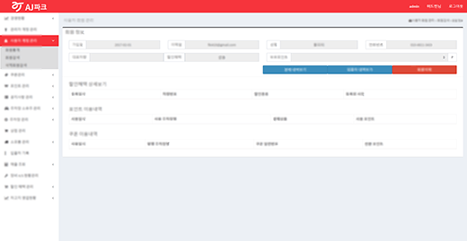
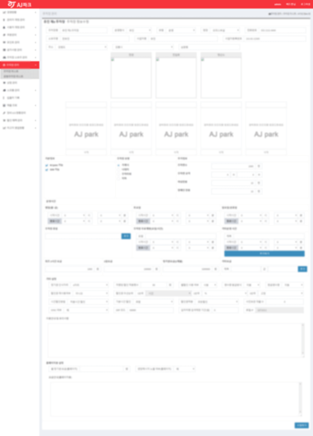
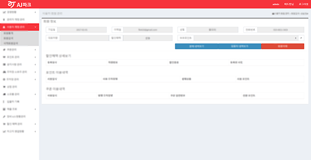
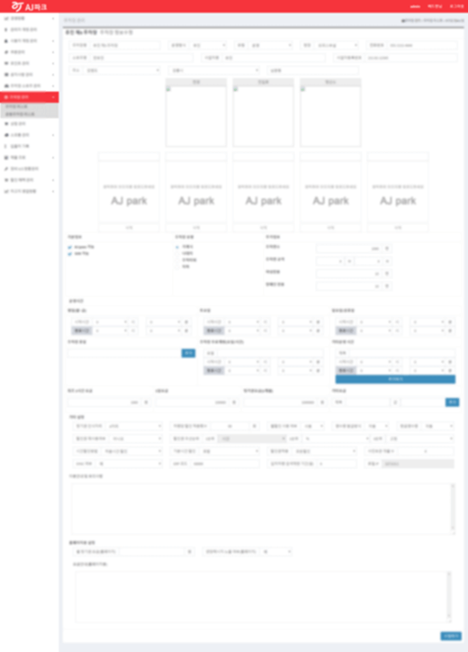

AJpark admin web
AJpark cloud admin과 AJpark LMS admin프로젝트를 진행하였다. AJpark라는 주차장관제 서비스를 관리하는 웹이다. cloud admin은 모든정보를 총괄 및 관리하는 웹이고, LMS admin는 인터넷이 연결되지않은 주차장을 로컬로 관리하는 웹이다. 페이지는 대부분 jsRender를 이용하여 구성하였고, 프로젝트가 커서 api를 붙여서 페이지를 구성하는작업도 담당하게되었다. 라이브러리는 datepicker, chartjs, jQuery validation등을 사용하였다.

 



cloud admin 같은경우에는 UI도없고 가이드라인도없고 단순 기능정의만 되어있는 엑셀문서를 기반으로 만들었는데 덕분에 페이지를 구상하는건 별로 힘들지않았다. LMS는 cloud와는 다르게 어느정도는 UI문서가 제공된상태로 작업했다. LMS에는 아코디언테이블 팝업등 cloud보다는 좀 더 다양한 css작업을 할 수 있었다.

클라이언트 요청에따라 부트스트랩과 템플릿기반으로 만들기는하였지만 나는 css프레임워크를 별로 좋아하지않는다. 그래도 한번쯤 써본건 나쁜 경험은 아니었다고 생각한 프로젝트였다.